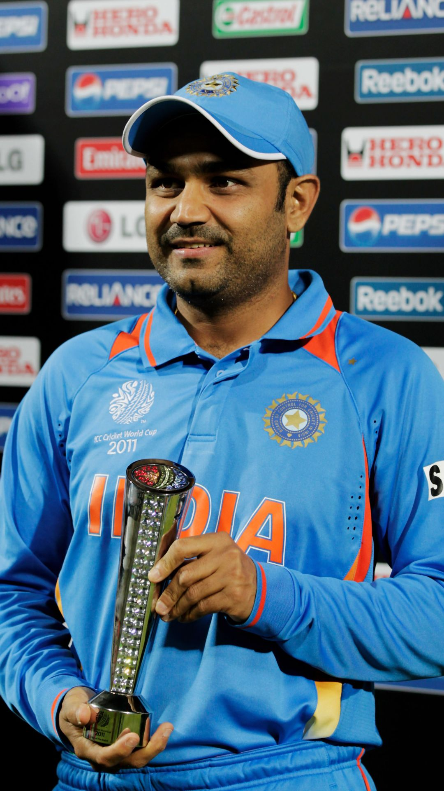

Sachin Tendulkar

Sachin Ramesh Tendulkar, is an Indian former international cricketer who
captained the Indian national team. He is widely regarded as one of the
greatest batsmen in the history of cricket.Tendulkar took up cricket at
the age of eleven, made his Test match debut on 15 November 1989 against
Pakistan in Karachi at the age of sixteen
Virendra Sehwag

Virender Sehwag is a former Indian cricketer who represented India from
1999 to 2013. Widely regarded as one of the most destructive openers and
one of the greatest batsman of his era, he played for Delhi Capitals in
IPL and Delhi and Haryana in Indian domestic cricket.
Virat Kohli

Virat Kohli (born 5 November 1988) is an Indian international cricketer
and the former captain of the Indian national cricket team. He currently
represents Royal Challengers Bangalore in the IPL and Delhi in domestic
cricket. Kohli is widely regarded as one of the greatest batsmen in the
history of cricket.